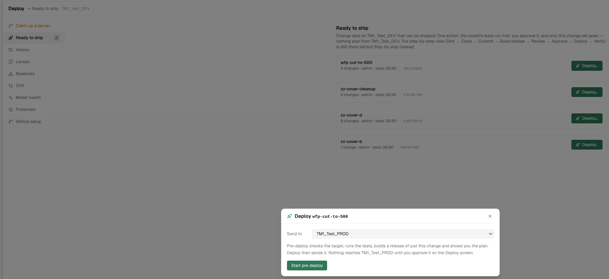
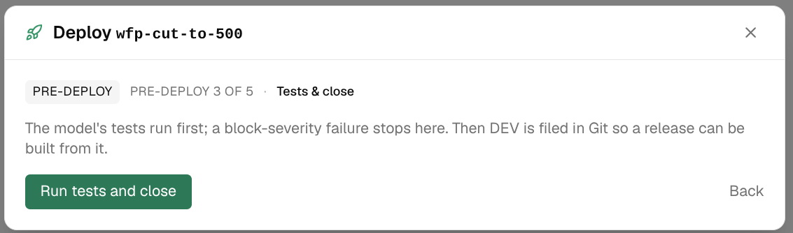
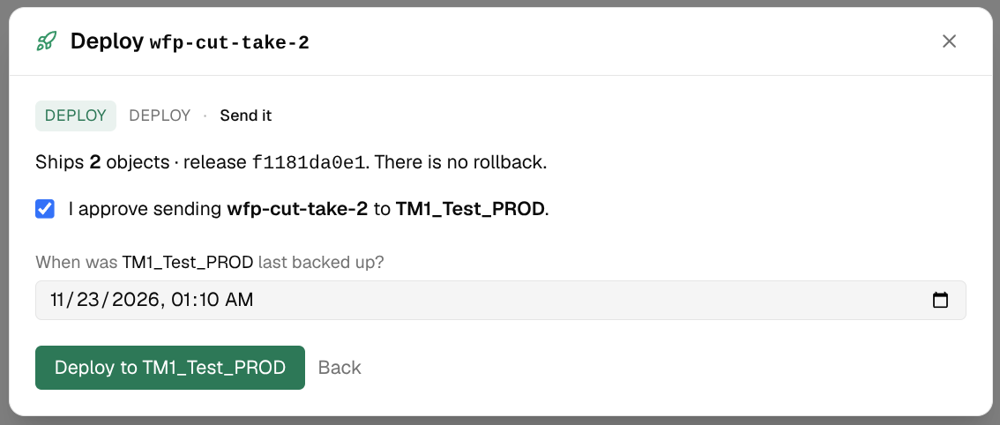
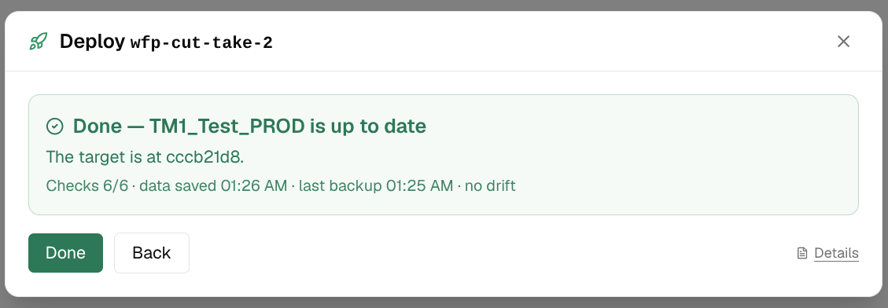

Why this exists
What this paper is
This is a learning paper, not a manual. It records what we found while building governed deployments for TM1, how we tested it, and the tools that came out of it. If you are automating deployments yourself, some of this should save you time. The rest is simply what happened.
It is written for everyone who touches a deployment: administrators who run the servers, developers who build the models, and managers who have to trust the result. Every term is explained where it first appears.
It is long because it is complete. Weeks of research went into the integration described here, and the findings are the point: what went wrong, how we found it, and what we changed. Read it in parts. The process section works as a reference once you know the shape of it, and the scenarios at the end are for when something surprises you.
Where this was tested
Falcon BI's TM1 IDE is a lab environment we built to test against real, complex models rather than small ones that fit on a slide. It is backed by an MCP server, so an AI agent can read the model, change it, and run the same process a person does, with the same record. We used OpenCode and Claude Code to build and test alongside it: writing rules, running deploys, and finding the failures described here.
The lab itself, since results are only useful if you know where they came from:
| Part | What it is |
|---|---|
| Host | Ubuntu machine running a Windows VM, with TM1 on the VM |
| TM1 | Version 11, two servers for the pair: TM1_Test_DEV and TM1_Test_PROD, on one Admin Server |
| Connection | TM1 REST API v1, direct to the Admin Server |
| Model | A workforce planning model: 35 dimensions, 18 cubes, 7 of them with rules, 537 positions |
| Source control | One private GitHub repository for the pair, TM1's own Git integration |
| Tooling | The TM1 IDE (Node and React), its MCP server, OpenCode and Claude Code |
| Checks | 61 assertions stored in the model: 36 logic, 25 quality |
The intention is to advance TM1 tooling for AI-augmented development. If an agent is going to change a model, it should have to go through the same governed path a person does. The work below is what that path looks like.
How an agent takes part
The MCP server exposes 64 tools over the model and over the deploy. They fall into four groups, and the grouping is the point: an agent is not given a shortcut.
| What the agent can do | Some of the tools |
|---|---|
| Read the model | list_cubes, get_cube_rules, get_elements, list_processes, list_views, find_cubes_using_dimension |
| Change the model | update_cube_rules, update_process, add_elements, build_process, write_cells, reprocess_feeders |
| Run it and prove it | run_process, check_rules_syntax, trace_feeders, get_process_log, run_assertions |
| See the release | pre_deploy_check, show_release, show_review |
Its work is recorded the way a person's is. It starts a change set (start_change_set), its saves land in it, the processes it runs are captured, and it closes the set through the same tests (close_change_set). There is no second path into PROD.
One boundary is deliberate. An agent can read the pre-deploy check, a release and Review, but it cannot approve or deploy. Those stay with a person, in the IDE. The tools that change a model also sit behind the server's own guard: a read-only mode, a per-server policy, separate reader and builder identities, and masking of cell values and TI passwords.
How the pieces fit together
Several developers, one DEV. Each person opens their own change set, and a save lands in that person's own set. One set is active per person at a time: close it to open another, and it can be reopened while it has never reached a server. Two people can work on the same DEV on different objects without touching each other's record.
One change set per deploy, on purpose. A release carries one closed set and nothing else from DEV. That is what makes an approval mean something: the approver sees what ships, and only that ships. Two sets that touch the same object deploy in the order the changes were made, and the order check refuses anything else.
Direct to PROD, or through TEST. Both are supported. A small, well-understood change can go straight from DEV to PROD, with the same check, release, Review and approval. TEST exists for the changes where a rehearsal is worth the extra step: it is another target, with its own release and its own approval, and the same change set travels to both.
After a deploy, re-clone TEST. TEST is a rehearsal only while it is shaped like PROD. Once a set has gone through TEST and reached PROD, the cycle is closed, and TEST has to be rebuilt from PROD before the next one.
Sync DEV when PROD's own changes start to matter. A deploy never needs it: the release carries PROD's own copy of the data. It is for when you want to work with those changes on DEV, such as mapping accounts a load created overnight. It is admin only, it refuses while any change set is open, and it records itself in a set that can never be deployed.
When PROD has changed and DEV has not
This is the case that shapes the design, so it is worth stating plainly. PROD changes by itself: a load adds accounts, a user saves a view, someone edits a rule by hand.
Step 2 shows it. PROD writes a snapshot of itself to live-PROD, and that is compared with the commit PROD last received. Every difference is named, and what DEV does not have is named too.
The release starts from PROD's own copy. For data objects, the release is built from live-PROD and your recorded changes are applied on top. So PROD's additions are in the release because they are already on PROD, not because someone remembered to copy them to DEV.
Code is the exception. Rules, processes and cube structure come from DEV, so a hand edit to one of those on PROD stops the deploy instead of being merged. Code has to go through DEV.
The checks run before the deploy, not after it fails. Step 2 refuses a deleted dimension, cube or attribute that a process on PROD still uses. Review names every element the release would remove and needs a yes. The pull itself is atomic: if it fails part way, TM1 rolls it back.
| What we hit | What the screens do |
|---|---|
| PROD loaded new elements that DEV never had | Named at Check PROD; the release carries PROD's copy, so they survive the pull |
| A dimension the change set does not touch | Its PROD copy is carried too, so the pull cannot roll it back |
| PROD deleted something DEV still has | Reported, and the release keeps it as PROD has it |
| Both sides changed the same subset or view | The deploy stops and asks which version to keep |
| A rule or process edited by hand on PROD | Stops the deploy; carry PROD's version back to DEV, then release it |
| A change set deletes an object a PROD process still uses | Check PROD stops and names the process |
What this paper covers
What we are trying to do. Move one piece of work from a DEV server onto a live TM1 server, without destroying what the live server does by itself. The live server is not a copy of DEV: a nightly load adds accounts and employees, users save views, an operator switches a chore off for month-end. A deploy that simply replaced its objects with DEV's copies would erase that work, and the data stored against it. Every rule in this guide follows from that one requirement.
How we got here
Three attempts, each one fixing what the last got wrong.
- Our own deploy, over the TM1 REST API. Read each object from DEV, rebuild it on PROD with our own code. The scope was right — only the change set's objects — but the fidelity was not: attribute values were lost on a redeploy, two subsets both called
Defaultcollapsed into one, a view came back as “all members”. Every bug was fixable. The list was not: it grew with every object type and every TM1 version. - TM1's own Git. IBM's format, applied by TM1, all or nothing: a failed pull rolls back. That removed the fidelity bugs by construction, because our code stopped rebuilding anything. It also brought three limits: a pull takes a whole branch, not one change set; it carries no attribute values and no deletes; and it makes the target match the release, object by object.
- Refresh first, then ship. Copy the target's own changes into DEV before building, so the release carries them. It worked, and it cost a second model that had to stay in step — plus a three-copy comparison to tell “PROD added this” from “DEV removed that”.
Where we are now. A release is built from the target's own copy plus this change set's recorded changes. The target's work is in the release by definition, so there is no refresh step and nothing for the pull to undo; the change log — not a diff — says what DEV did. The rest of this guide is that design, step by step: what it does, where it stops, and what to do when it stops.
Short version. One change set goes to one server. The release is that server's model plus your change. Nothing is removed without someone saying yes. One deploy per server at a time.
Before you start
Who this is for. Anyone who has to move a change to a TM1 model from a DEV server onto a live one: a modeller, an admin, or an agent working through the IDE. You are expected to know TM1 objects — rules, TI, dimensions, cubes, chores. You are not expected to know Git.
What you need in place:
- a DEV server you are allowed to change;
- a server to send the change to — PROD, or TEST first if you want a rehearsal;
- one Git repository, with both servers linked to it — done once, in step 0;
- the TM1 IDE pointed at both servers. That is where every screen in this guide lives.
What you do not need: a Git client, a command line, or TM1 admin rights. Nothing here asks you to type a Git command, and every action is a button in the IDE.
What this guide is not. It does not teach TM1 rules or TI, and it does not decide what your model should say. It is about one thing: getting a change from one server to another without destroying the work the other server did by itself.
The problem it solves, in two sentences. A live server changes every day — loads add accounts and employees, users save views, an operator switches a chore off. A deploy that simply replaced its objects with DEV’s copies would wipe that work, and the data attached to it. So a release is built as the target’s own model plus only your change, and nothing is removed without someone saying yes.
Your first deploy
If you read one page, read this one. The rest of the guide explains why the design looks like this; this page is what you actually do.
- Open a change set. In the IDE header: Change Sets → New. Name it after the work — “Variance rule and account groups”, not “this month”.
- Do the work on DEV. Rules, TI, dimensions, views. Every save is recorded in the change set; there is nothing to stage, commit or push.
- Close it. Close — run tests runs the model’s tests and fixes exactly what will ship. A blocking failure keeps the set open.
- Start the deploy. Deploy → Ready to deploy: choose the change set and the target, press Deploy…. The screen walks four pre-deploy steps — Check PROD, Tests & close (skipped if you just closed it), Build release, Review.
- Read Review, approve, send. Review says what changes and says plainly whether anything is deleted. Approve, and the deploy does the rest in order: Save Data → backup → pull → apply → verify.
Every decision you have to make is in this table. Everything else is detail behind it.
| Decision | Your answer | Detail |
|---|---|---|
| Which work ships? | One change set. Never two, and nothing else from DEV | Step 1 |
| Which server gets it? | PROD, or TEST first if you want a rehearsal | Step 0 — including the TEST cycle |
| Is now a safe time? | Nothing running, nothing changed on the target by hand | Step 2 |
| What will it actually do? | Review’s list, plus an explicit yes for every element it removes | Step 5 |
| Who approved it? | You, against that exact commit. A rebuilt release needs a new approval | Step 6 |
The idea in one line. A release is the target’s own model plus only your change, so a deploy never has to undo the work the target did by itself.
Afterwards: step 10 checks what landed and writes the record into the target’s model. Step 11 is what to do when something went wrong — model objects come back with a release, data comes back only from the backup. Background A–E is the reasoning behind all of it — A is the one-page map, B–E the why; what we found is the history; limits is what it still cannot do.
Terms used here
Ten words carry the whole guide. Nothing else is jargon for its own sake.
| Word | What it means here |
|---|---|
| Change set | One person’s piece of work on one server. You open it before you start, and every save is recorded in it: what, who, when. |
| Release | The commit a target is sent. It is the target’s own model plus only one change set’s changes. Nothing else from DEV is in it. |
| Target | The server receiving a deploy — TEST or PROD. DEV is never a target; it is where the work is done. |
| Pull | TM1 Git rebuilding the target’s model from a commit. All or nothing: a failure rolls the whole pull back. |
| Drift | The target changed by itself since the deploy it last received — a load added accounts, someone switched a chore off, someone edited a rule. |
| Carry-back | Copying a rule or process that was edited on the target back onto DEV, so it travels through the normal process instead of being overwritten. |
| Sync DEV | Copying the target’s own changes onto DEV. Separate from a deploy, admin only, and never itself deployed. |
| Fixture | The small TI process that writes known test data before a logic check runs, so the check can expect an exact number. |
| Lock | One deploy per target at a time. Held for the whole deploy, released on success or failure. |
| Test cycle | Everything tested on TEST between two re-clones of TEST from PROD. It closes the moment a set in it reaches PROD. |
The deploy in one picture
A deploy here is one process with eleven numbered steps. Step 0 comes before them, once, when you set things up. Steps 1 to 10 happen every time a piece of work goes to PROD. Step 11 is there for when something goes wrong.
Every step in this guide starts with the same bar, so you always know where you are:
Click any number to jump to that step. Letters (A to E) are background; numbers are steps. When the text says “step 3”, it always means the same thing.
2–5 are the four pre-deploy screens: 2 Check PROD · 3 Tests & close · 4 Build release · 5 Review. 6–10 all happen on one Deploy screen, in that order. 0 is setup, once; 11 is for when something goes wrong.
| Step | Phase | What happens | Changes |
|---|---|---|---|
| 0 | Set up | Link DEV and PROD to one Git repository and start them from the same commit | both, once |
| 1 | Develop | Build on DEV. Every save is recorded in your change set | DEV |
| 2 | Pre-deploy | Is PROD quiet? Has anyone changed it outside a deploy? | nothing |
| 3 | Pre-deploy | Run the tests, close the change set, commit DEV to Git | Git |
| 4 | Pre-deploy | Build release: PROD’s own state plus only this change set | Git |
| 5 | Pre-deploy | Say in words what will happen on PROD; stop before anything is lost | nothing |
| 6 | Deploy | Approve this exact release | record |
| 7 | Deploy | Check PROD is still quiet | nothing |
| 8 | Deploy | Save PROD’s data to disk; run the backup | PROD files |
| 9 | Deploy | TM1 Git pulls the release; the IDE applies what Git can’t | PROD |
| 10 | Deploy | Check it landed; record who, what and when in PROD’s model | record |
| 11 | After | Put the design back, or the data, or DEV | as needed |
Three places hold the model: the DEV server, the Git repository and the PROD server. The IDE sits underneath and does the work. Every move in the whole process is on this one map, labelled with the step that makes it. It is drawn again at step 9, where the pull happens.
Three rules under everything. A release carries exactly one change set and nothing else from DEV. Nothing is removed or cleared on a target without an explicit yes. And one target takes one deploy at a time.
To keep it concrete, one example runs through every step. The work: a developer adds a variance rule to a Finance cube (Variance = Actual − Budget), and gives some accounts a new Account Group attribute value. Meanwhile on PROD: an hourly Load Actuals chore adds new GL accounts as they appear in the ledger, with their numbers. This week it added GL 4105 Software subscriptions and loaded 3,200 against it.
A good deploy ships the rule and the attribute values, and keeps 4105 and its 3,200 on PROD.
Set up DEV and Git (once)
- What happens
- DEV starts as a copy of PROD. Both are linked to one Git repository with their tags. DEV’s model becomes the first commit, and PROD takes it as its first pull, which changes nothing but records where PROD starts.
- Why
- Every later step compares against a commit. Without a recorded starting point on PROD, no release can be built at all.
- Can stop here
- A first pull overwrites a whole server. It runs only on a server never deployed to, shows what it would replace, and needs you to type a sentence.
The setup, in order
- (a) Make DEV a copy of PROD, model and data. This happens in TM1, outside Git and outside the IDE: restore PROD’s backup onto a new TM1 server.
- Link each server (Deploy → GitHub setup): the repository address and the tag,
DEVfor DEV,PRODfor PROD. The Git token is kept by the IDE and passed on each call; TM1 doesn’t store it. - (b) DEV pushes the first commit: its whole model, which is PROD’s model.
- (c) PROD takes that commit as its first pull. The screen first shows what the pull would replace and remove, and you type a sentence to go ahead. Because DEV is a copy, it should say nothing is removed. This pull is what records PROD’s starting point; without it, the first release refuses to build.
- Mark PROD read-only in the IDE’s server settings (
readOnlyServers; there’s no screen for it). From then on, nothing writes to PROD except a deploy.
Read the sentence before you type it. A first pull makes PROD match DEV, completely. If DEV isn’t a faithful copy, the sentence says so: “… and removes 120 elements in 3 dimensions”. Stop there and fix DEV first.
DEV, TEST, PROD — and the test cycle
TEST is optional, and it is not a different process: it is just another target, with its own tag and its own release branch (release-TEST). What makes it a rehearsal is that it starts life as a copy of PROD. If it doesn't, it proves nothing — you would be testing against a model PROD has never run.
- Re-clone TEST from PROD, model and data, by restoring PROD's backup onto it. This happens in TM1, outside the IDE. Then tell the IDE: Deploy → Admin → “TEST was re-cloned”. That one action writes TEST's own objects to Git as TEST Last Deployed, rewrites its attributes, and starts a new test cycle.
- Deploy a change set DEV → TEST, steps 2 to 10. TEST started as a copy of PROD, so its release starts from TEST's own copy and carries the same change PROD's release will.
- Test on TEST, with real-shaped data and the checks in step 10.
- Deploy the same change set DEV → PROD. A new release, built from PROD's own copy, and a new approval. The change set is the same; the release and the approval are not, because PROD is a different target.
Then the next cycle starts again at step 1: re-clone TEST from PROD before the next deploy. That is not bureaucracy. TEST has just taken a release, so it no longer matches PROD; if you leave it and test the next change on it, you are testing two changes at once and can no longer tell which one broke something.
| The cycle | What it means |
|---|---|
| A re-clone starts it | Every change set deployed to TEST after that re-clone belongs to the same cycle |
| It stays open while nothing in it has reached PROD | Another change set may join it — that is how you test two related sets together |
| It closes the moment any set in it is deployed to PROD | A new set is then refused on TEST with a plain message: re-clone TEST from PROD before deploying it |
| A set that reached TEST but never PROD may be retired | Rework is a new change set; the record says the first one stopped on TEST |
| Re-cloning supersedes unfinished TEST deploys | Those change sets wait for TEST again, because the server they were tested on no longer exists |
We have run the DEV → PROD loop end to end on a lab pair. The TEST loop uses the same pieces but hasn't been run on the lab yet.
Work in a change set
- What happens
- You build on DEV with a change set open. Every save is recorded in it.
- Why
- The change set is what the release, the approval and the record are all made from. Work saved outside one isn’t tracked, and won’t ship.
- Can stop here
- Nothing stops here. The checks come later.
Work as you normally would. A few habits make the later steps smooth:
- Keep a change set to one purpose. “Variance rule and account groups” is fine. “Everything this month” makes Review hard to read and approval meaningless.
- Write the test with the change. A change set carries the tests that prove its change (see step 3).
- Make changes through the IDE or MCP, not through other tools on DEV. A change made elsewhere isn’t recorded, so it isn’t in the change set and isn’t ordered against other people’s work.
The developer opens change set Finance variance, adds the rule ['Variance'] = N: ['Actual'] - ['Budget']; with its feeder, and sets Account Group on twelve accounts. The change set now lists the Finance cube’s rules and the Account dimension.
Check PROD
- What happens
- The IDE checks PROD is quiet, and whether anyone changed PROD outside a deploy since the last one (drift).
- Why
- A pull replaces objects while TM1 is running. If a load is halfway through, it can fail or leave half-loaded data. And deploying on top of an unexplained PROD change would quietly overwrite it.
- Can stop here
- Something running: stops. A chore due within 30 minutes: asks Deploy anyway or Wait. Rules, TI, cube or chore steps changed on PROD: stops.
Open the deploy from Deploy → Ready to deploy, choose the change set and the target, and start.

Screenshots come from the lab pair and may show slightly older wording. The steps and the behaviour described here are the current ones.
Is it idle?
“Idle” means no process or chore is running on PROD now, and none is about to start.
| Finds | Then |
|---|---|
| A process or chore running now | Stops, naming what’s running and for how long |
| A chore due within 30 minutes | Asks: Deploy anyway, or Wait. You can’t continue until you choose. |
| Other people signed in | Lists them and asks you to confirm. The deploy’s own connection isn’t counted. |
It is 10:52. Load Actuals runs on the hour, so the check says it is due in 8 minutes. If the deploy replaced the Account dimension at 11:00 while the load was inserting new accounts into it, the load could fail or write half its data. Choose Wait, and start again at 11:05 when the load has finished.

Drift: has PROD changed outside a deploy?
Git holds two copies of PROD: release-PROD, what PROD last received, and prod-live, a snapshot PROD pushes of itself right now. The difference between them is drift.
- Rules, processes, cube structure, chore steps changed, or an object missing: deploys pause. The message names the object, what changed, and what to do — carry a rule back to DEV, redo a cube change on DEV, or copy the change across with Sync DEV (admin only, and only while DEV has no open change set). Nothing is reverted automatically: every automatic revert we tried opened a new way to lose work.
- Views and subsets that differ: reported, never blocking. A pull cannot touch them.
- A change on an object this deploy does not write: ignored. The pull skips it, so the deploy cannot lose it.
- A dimension PROD added to (the loaded GL code): allowed through only if the release carries it — which it will, because a release starts from PROD’s own copy (step 4).
What drift can’t see. Attribute values aren’t in Git, so drift never sees them. The release reads them live instead (step 4).
Tests & close
- What happens
- The model’s tests run on DEV. If they pass, the change set closes and DEV is pushed to the
devbranch. - Why
- A deploy should only carry work that has proved itself. Closing fixes the change set, so what is approved is exactly what was tested.
- Can stop here
- A failing test of severity block stops here, and the change set stays open. A failing warn test is recorded but doesn’t stop.
Tests that stay true
This part changed the most while building the deploy, and it is worth explaining.
The problem. The workforce model in our lab had 60 tests, all of the form “this query returns this exact number”, all reading the shared DEV data. When the data changed (a rebuild, a reseed, cutting the model down), 25 went red at once. Nobody could tell the model is wrong from the data changed: both look identical. The only quick fix was to overwrite the expected numbers, which quietly turns a test into one that always passes.
The fix is not better numbers. It is two kinds of check, each with its own contract:
| Kind | Input | Expected | Runs | Blocks? |
|---|---|---|---|---|
| Logic | any data, or data the test writes itself | a relationship (a total minus the sum of its children is 0; every cube has a Default view) or an exact number worked out by hand | at close on DEV; on PROD after every deploy (step 10), the ones that need no test data | yes |
| Quality | whatever is in the model | a threshold or range | on a schedule, in Model health; never in a deploy, never on PROD | no, it warns the data owner |
The rule that keeps them apart: if you can’t state it without a number that depends on today’s data, it isn’t a gate.
Model health only runs quality checks against a target, TEST or PROD, because DEV's data is a copy that gets rebuilt. On DEV it runs the logic checks alone, and says so. That also stops twenty data warnings looking like three broken calculations.
- A logic check that needs data brings its own. Before it runs, a small TI process writes a known input into a reserved
Testversion, hidden from users and never in reports: one position, one employee, a salary and an FTE. The check then asks for one answer, worked out by hand. It rewrites its input every run, so there is nothing to clean up. When a check needs no data at all, it does not use the fixture. - The checks that need no data run anywhere, because they never depend on what the data is. That is why six of them run on PROD after a deploy.
- The data has an identity. The fixture is recorded with the tests. Changing it is a deliberate, recorded event, so a red test is always either “the model changed” or “the data changed”, and the record says which.
- The tests live in the model, so every tool, and every copy of the IDE, sees the same ones.
Where the lab model is now. 36 logic checks and 25 quality checks. On DEV a close runs the 36 and stops on 3 — three real calculation bugs, still open. The 25 quality checks do not run in a deploy. On PROD the close leaves 6: the ones that need no test data, and all 6 pass.
The change set carries one logic check that uses the fixture: put Actual 100 and Budget 80 on a test account in the Test version, expect Variance 20. Plus a check that needs no data: Variance at Total Accounts equals the sum of its children. Both pass, the change set closes, and DEV is pushed to dev.

Build release
- What happens
- The IDE builds the release on the
release-PRODbranch. For a dimension or a chore schedule it starts from PROD’s own copy and applies only this change set’s recorded edits. For everything else it takes the object’s files from DEV’s commit. - Why
- Two things at once: only this change set ships, so another person’s half-finished work stays behind; and PROD’s own work is already in the release, so the pull has nothing of PROD’s to undo.
- Can stop here
- An older change set touched the same object and isn’t deployed yet. A newer change to the same object is already on PROD. A file carried along has changes nobody recorded.
A release also carries what an object can’t work without: a subset carries its dimension’s hierarchy file, a view its cube’s file, an MDX view its query text.
What comes from where is worth knowing, because it explains why a deploy does not need DEV to hold PROD’s changes:
| Object | The release starts from | Then applies |
|---|---|---|
| Dimension | PROD’s copy, live | This change set’s recorded element adds, edits, moves and deletes |
| Chore schedule | PROD’s copy, live | This change set’s recorded schedule change; the on/off switch stays PROD’s |
| Rules, process, cube, view, subset | DEV’s file at the close commit | Nothing — the file is the change |
| Attribute values | Read live from PROD | Only the values this change set recorded, for attributes allowed to travel |
Order across change sets
Two change sets can touch the same object. Deployed in the wrong order, the older one would bring back something the newer one changed or removed. So shared objects deploy in the order the changes were made.
The order comes from the change log: for each object, when each change set last changed it. Close dates aren’t used, because a set can be closed long after the edit that matters. A change set that turns out to change nothing is recorded “nothing to deploy, done”, so it doesn’t hold up the sets behind it.
Anything DEV changed that this release won’t carry is listed by name, with an option to include it.
The release holds two objects: the Finance cube’s rule file and the Account dimension. The Account dimension is PROD’s copy — so it already contains GL 4105 — with the twelve Account Group values from the change set written over it. Another developer’s open work on a Sales process is listed on the same screen as “on DEV, but not sent” and does not ship.

Review
- What happens
- Review says in words what will happen on PROD, and compares the release with PROD as it is now.
- Why
- This is the last look before anything is sent. Where the deploy would destroy something, it stops and waits for an explicit yes.
- Can stop here
- Elements removed: “Yes, remove these”. A leaf element becoming a consolidation: “Yes, change these”. A view or subset changed on both sides: choose whose. Say no, and nothing is deployed.
Review lists each object: replace dimension Account, change rules Finance, add subset Default, delete process …, with how many objects are already identical. It also names anything DEV holds that this release does not send.
The two questions a person actually has are answered on separate lines:
| Review says | What it means |
|---|---|
| Deletes: nothing. PROD keeps everything it has | No element disappears, and no value goes with it. The deploy can still change things: this is not “nothing happens” |
| Changes: 2 objects — dimension, cube | What it does do. A dimension is replaced whole; a cube’s rules are replaced |
| This deploy removes 4 elements in 1 dimension | An explicit yes is required, and every element is named before it goes |
| This deploy changes the type of 1 element | Its stored values are cleared. Also an explicit yes |
The quiet one: giving a leaf element children. TM1 turns it into a consolidation and clears every value stored against it, with no warning of its own. Review makes that warning.
Belt and braces. A removal is decided twice: when the delete is recorded in the change set, and again here, against PROD as it is at this moment. Nothing is removed on the strength of an old decision.
Review: replace dimension Account (it starts from PROD’s copy, so 4105 is in it), change rules Finance. Deletes: nothing. No type changes, so there is nothing to confirm beyond the release itself.

Approve
- What happens
- You approve this exact release, and confirm the backup that runs before it.
- Why
- Approval has to mean something: the approver sees what ships, and only that ships. If anything changes after approval, it no longer matches.
- Can stop here
- If DEV or the release changes after you approve, the deploy refuses and asks for a new approval.
- The approval is bound to the release. It names the release’s commit. A different commit needs a new approval.
- The backup is not optional, and it is not a time you type. It runs in step 8 and a failure stops everything, so approving the release is approving the backup that goes with it.
- What “Return to last release” can undo is shown here: model objects, not data (step 11).

Idle check again
- What happens
- The idle check from step 2 runs again, just before anything is sent.
- Why
- Pre-deploy can take a while: reading Review, getting an approval. A load can start in the meantime.
- Can stop here
- Something running now: stops. Nothing has been sent.
By the time the approval comes through it’s 11:58. Load Actuals is due at 12:00, so the check asks again. Wait for it, then press Deploy.
The idle check is a snapshot. Something can still start in the few seconds between this check and the pull. The window is small, not zero.
Save Data and backup
- What happens
- PROD writes its data to disk (Save Data), then the backup runs: the site’s own process, or
}IDE.Backup. - Why
- A deploy carries objects, not data. If data is ever lost, only a backup brings it back. So the backup is taken before the pull, never after.
- Can stop here
- Save Data fails: stops. The backup process fails: stops. Nothing has been sent.
Save Data matters on its own too: TM1 holds recent changes in memory and the transaction log. Writing them to disk first means a restart, or a restore, starts from the latest data.
One deploy at a time
Before any of this starts, the deploy takes a lock on the target, and holds it until the last check finishes. A second deploy to the same server is refused, and the message names who holds it:
Refused: TM1_Test_PROD is already being deployed by james since 11:42. Wait for that deploy to finish.
- It is per target, not global. A deploy to TEST does not block one to PROD.
- It is in the target's own model (
Applications/Governance/Deployments), so every copy of the IDE pointed at that server sees the same lock — not just the machine that started it. - It is released on success or failure. A deploy that dies with the backend leaves a lock behind; after about 30 minutes it counts as stale, and an admin can clear it from the IDE. Clearing is recorded, and a live lock cannot be cleared.
- It is not a queue. The second person is refused, not parked; they try again when the first is done.
An honest limit. Taking the lock is a check followed by a write, so two deploys that start in the same second could in principle both pass the check. It has not happened; a true compare-and-swap would close it. For a small team, the cost of that machinery is higher than the risk.
Send
- What happens
- TM1 Git pulls the release onto PROD, all or nothing. Then the IDE applies what Git doesn’t carry.
- Why
- The pull moves model objects in IBM’s own format. Subsets, views, deletes and attribute values have to be applied separately (background D).
- Can stop here
- If the pull fails, TM1 rolls the whole pull back and PROD is unchanged. A refused delete, or an object that didn’t land, marks the deploy failed.
In order
- Note PROD’s chore switches. Which chores are on and off, before anything changes.
- The pull. Every object in the release is made identical to the release’s copy.
- Put the chore switches back as PROD had them. DEV’s chores are kept off so they never run on DEV; the switch on PROD is PROD’s decision, not the release’s.
- Subsets, then views, from the release’s files.
- Attribute values, only for attributes the release recorded as able to travel.
- Deletes, in a safe order: views, subsets, chores, processes, cubes, then dimensions. A chore goes before the process it runs. A delete TM1 refuses is a failure, never a quiet skip; an object already gone counts as done.
The pull replaces the Finance rules and the Account dimension. Account arrives with 4105, because the release carried it. The twelve Account Group values are written. Load Actuals is switched back on, as PROD had it.
Verify and record
- What happens
- The IDE checks each object landed, that PROD now matches what it was given, and runs the logic checks that need no test data (six of them). The deploy record is written into PROD’s model.
- Why
- A deploy that “finished” isn’t the same as one that worked. And the record is what audit, the next drift check and Return to last release all rely on.
- Can stop here
- An object missing, or one of those checks failing, is reported: “deployed, but the model no longer computes correctly”.

Details opens the deploy report: who approved it, what shipped, the checks, drift, and every element removed. The same record is kept in PROD’s model under Applications/Governance, so any copy of the IDE pointed at PROD sees the same history.

Checks pass; drift is clear. On PROD, 4105 is still there with its 3,200, Variance calculates, and the next hourly load runs as normal.
It is not finished until someone signs it off
When the checks pass, the deploy shows awaiting sign-off. Everything the tool can verify has passed; what is left is a person using it. Test it on the target, then confirm it in Change Sets → this change set → ⋯ → “I tested this on …”. The row then shows who signed it and when, and the deploy report says the same.
The sign-off is recorded per target. The same change set deployed to TEST and then to PROD has two records, and two sign-offs.
If it goes wrong
- What happens
- Put things right: PROD’s design, PROD’s data, or DEV.
- Why
- Different things come back different ways. Knowing which before you start saves the wrong fix.
- Can stop here
- —
| Situation | What to do |
|---|---|
| The deploy stopped before sending | Nothing reached PROD. Read the reason, fix it, and start again from step 2. |
| A delete failed | The report lists it. Fix the cause; an admin re-runs only that release’s recorded deletes, and the re-run is logged. (No button for this yet.) |
| PROD’s design is wrong after a deploy | Return to last release (Deploy → Drift, admin only): a new release that puts PROD’s model objects back as they were, approved and recorded, with a warning if it would remove elements. |
| Data was lost | Return to last release doesn’t restore data. Values cleared by a removal or a type change come back only from the backup taken in step 8. |
| DEV is in a mess | Inside an open change set, the change log keeps a before-and-after copy of each save, so a changed object can be put back. For a whole DEV, rebuild a DEV server from the repository (step 0) and restore its data. Putting an existing DEV back to, say, last Tuesday isn’t a single button yet. |
A worked example: PROD cut to 500 people
The lab’s workforce model on DEV had been trimmed to about 500 employees and positions. PROD still had 2,785 employees and 3,040 positions, all test data. The goal: bring PROD down to match.
- First attempt, build. DEV had been cut earlier, outside this change set, so the set didn’t own the two dimensions. The release carried a chore and subsets, but not the dimensions. The pull failed on a subset error and TM1 rolled the whole thing back: PROD was untouched. Build now lists this case by name, with an option to include it.
- Second attempt, check PROD: idle; a chore due inside the window was noted.
- Refresh — a step the flow no longer has. At the time it compared only PROD with DEV, so it listed the 4,798 removed people as things PROD had, ticked to bring back. They were not brought back only because two unanswered subset questions greyed out the button and Continue was pressed instead. That is the failure the current design removes: a release that starts from PROD’s own copy cannot put back what DEV deleted.
- Tests & close: 36 of 60 checks passed; the 24 failures were warnings (the two kinds are explained in step 3).
- Build release: the two dimensions and their Default subsets, included this time.
- Review: stopped at “This deploy removes 4,798 elements in 2 dimensions”. Confirmed.
- Approve to verify: approved, idle again, Save Data, backup, pull, subsets applied, verified. All checks passed, drift clean, about 19 seconds.

Change sets: one person’s piece of work
From here on it is background. The steps above are the process; B to E explain why it is shaped this way — change sets, Git, why TM1 Git and what it cannot do, and the hard part: both sides changing. Read them when you want the reasoning, or when something above surprised you.
A change set is the unit everything else hangs on. Think of it as a named basket. You open one before you start, and from then on every object you save on DEV is recorded in it: which object, what changed, who, when.
Why work this way
- It is individual. A change set belongs to one person on one server: the TM1 user signed in to DEV. An AI agent working through the MCP server gets its own name too, never quietly someone else’s basket. Two developers on the same DEV have two change sets.
- It is governed. Tests run against it before it can close. A closed change set becomes a permanent record in the model itself, not on someone’s laptop. Approval is given to it, and the deploy record says which change set reached PROD.
- It is built for deploying. A release is made from exactly one change set. That is what lets an approver say “I approved this, and only this, reached PROD”.
How it works
- Open a change set on DEV, with a name and a reason.
- Work normally: rules, processes, dimensions, views. The IDE records each save.
- When it’s ready, the deploy starts from it (step 2 onwards).
- Closing it (step 3) runs the tests and commits DEV to Git.
- One release, one approval and one deploy record follow, all naming the same change set.
What a change set includes, object by object
The change set records the object you saved, but TM1 Git moves whole objects, so the release carries the whole thing. This matters more than it sounds:
| You saved… | The release carries… |
|---|---|
| a rule | the cube’s rule file |
| a TI process | the whole process |
| one element, or one attribute value | the whole dimension |
| a subset | the subset, plus its dimension’s hierarchy file it can’t work without |
| a view | the view, plus its cube’s file |
Giving accounts a new Account Group value puts the Account dimension in the change set, so this release replaces PROD’s Account dimension — the one that holds GL 4105. That is safe, because the release starts from PROD’s own copy (step 4). Worth knowing anyway: a dimension change is never a one-element change.
One developer, or several
| Set-up | How it works | Status |
|---|---|---|
| One shared DEV, one shared IDE on a server | Each person signs in as themselves and gets their own change set. If two open change sets touch the same object, the IDE warns at close and deploy. | Built. Suits a small team. |
| One shared DEV, an IDE each on their laptops | Works, but open change sets are kept by each IDE, so the overlap warning can’t see the other person’s open work. Closed change sets and deploy records are in the model, so everyone sees those. | Works, with that gap. |
| A DEV server each | Each person builds their own DEV from the repository. The cleanest isolation; it needs a way to bring work together before PROD. | Designed, not built. |
One physical limit applies to any shared DEV: TM1 pushes the whole server. If two people edit the same object, they edit the same copy. Agree who owns shared objects.
Git in five minutes, and how TM1 uses it
If you already know Git, skip to “The circle” below.
The few words you need
| Word | Plain meaning |
|---|---|
| Repository (repo) | A folder of files with a full history of every version. Ours lives on GitHub, private. |
| Commit | A saved snapshot of all the files at one moment, with who made it and why. It has an ID like cccb21d8, and it never changes. |
| Branch | A named pointer to a commit, moving forward as new commits are added. Like a bookmark called “latest DEV”. |
| Push | Send a snapshot up to the repository as a new commit. |
| Pull | Make a copy match a commit from the repository. |
| Diff | The difference between two commits, file by file, line by line. |
What TM1 Git does
TM1 has Git built in. A push writes the server’s model out as files: one file per dimension hierarchy, cube, view, subset, chore and process, with rules and TI as plain text. A pull has TM1 rebuild its model from a commit. Cube data never goes into Git, and neither do attribute values.
Each server is linked to the repository once, with a tag that says what it is: DEV, TEST or PROD. The servers can be called anything; the tag is what says which role each plays. In this guide DEV is always the source and PROD always the target.
The circle
Three branches in one repository, each with one job:
| Branch | Who writes it | When | What it’s for |
|---|---|---|---|
dev | DEV pushes its whole model | every change set close (step 3) | where the release builder takes DEV’s files from |
release-PROD | the IDE builds a commit by hand | every release (step 4) | exactly what PROD is sent: PROD’s own copy plus this change set. After the deploy it is “what PROD last received” |
prod-live | PROD pushes its whole model | every drift check (steps 2, 5, 10) | PROD as it really is, to compare with what it last received |
So DEV goes into Git at close. A release starts from PROD’s own copy and applies only this change set’s recorded edits to it; other objects come from DEV’s files. PROD pulls the release, then pushes a snapshot of itself so the next deploy can check nothing changed in between. Round and round, one change set at a time.
One thing this circle still cannot do by itself: notice when PROD has changed on its own. That is the drift check, and it is where the rest of this guide starts.
Why TM1 Git, and what it doesn’t do
Everything here is built on TM1’s own Git integration. Why that and not our own code? Because its gaps are where most of the work went, and any reader is entitled to ask whether the choice was worth it.
What we had before: our own deploy over the REST API
The first pipeline did everything itself. It read each object in the change set from DEV over the TM1 REST API, wrote it out as JSON, and rebuilt it on PROD with its own code. The scope was right: only the change set’s objects shipped. The trouble was fidelity. We were maintaining our own copy of IBM’s object format, and every object type was a new place to be wrong.
| What went wrong | Example |
|---|---|
| Attribute values lost | Replayed when the deploy created a dimension, but not on a redeploy of it. |
| Subsets collapsed | Two subsets called Default on different dimensions were treated as one. |
| Views changed on the way | An axis using a named subset came back as “all members”, so a change nobody made appeared in the package. |
| Clean-up by hand | The model grew three processes whose only job was to rebuild what the deploy had failed to carry. |
Each bug was fixable, and we fixed them. But the list was never going to end: every new object type, and every new TM1 version, would bring more.
What TM1 Git gives us
- IBM’s own format, applied by TM1 itself. A push writes cubes, dimensions, processes, rules, views and subsets as files; a pull has TM1 rebuild them. The view and subset bugs above disappear by construction, because our code no longer rebuilds anything.
- All or nothing. If a pull fails partway, TM1 rolls the whole pull back. On the worked example’s first attempt (step 11), a subset referred to an element that wasn’t there; the pull failed with “Previous operations are rollbacked”, and PROD was untouched. Code that rebuilds objects one by one over REST can’t promise that.
- History for free. Every release is a Git commit. That is what makes Return to last release and the two-copies drift check (step 2) simple: both are just “compare with, or go back to, a commit”.
- Readable changes. Rules and TI are stored as plain text, so a change is a normal Git diff, and any Git client, TM1py or PAW can read the repository.
What it doesn’t do, and who does it instead
We tested TM1 Git on a lab pair of servers before building on it. These are the gaps that testing, and later real deploys, found:
| TM1 Git doesn’t… | So… |
|---|---|
| carry attribute values | The deploy writes them itself, and only for attributes an admin has confirmed should travel. |
| delete anything | The deploy runs the change set’s deletes itself, in dependency order, after the pull. |
| notice when PROD has been changed by hand | The deploy keeps a second copy of PROD in Git and compares the two (drift, step 2). |
| ship one change set: a pull takes the whole branch | Each release is built on its own branch, from the target’s own copy plus exactly one change set. |
| leave alone an object the release doesn’t mention | A pull makes every object match the release. So a release is built from PROD’s own copy plus this change set’s records (step 4), and the pull never has to guess. |
The honest cost
The last row is the expensive one. TM1 Git replaces a whole dimension, so the release has to be a complete, correct copy of it. Our first answer was to bring PROD’s changes into DEV before building — a Refresh step. It worked, but it made every deploy depend on a second model being in step with the first.
The answer we kept is simpler: the release starts from PROD’s own copy of the dimension, and applies only this change set’s recorded edits. PROD’s own work is therefore in the release by definition, and the pull has nothing to undo. The cost moved into the release builder, which has to apply recorded edits correctly to a live copy. That is one careful piece of code per object type, instead of a whole extra process.
There is also a dependency to state plainly: the deploy relies on how IBM’s Git integration behaves. If a TM1 update changes that behaviour, the deploy changes with it. The permanent tests behind every rule in this guide are what would catch it.
Was it the right choice? We still think so. The gaps are a short, fixed list, each filled once. The REST approach was a list that grew with every object type and every TM1 version. We would rather apply a change set’s records to the target’s own copy than maintain our own copy of IBM’s object format forever.
The full story of the move, including the discovery that a pull ships the whole branch, is in Governed TM1 deploys.
The hard part: both sides change
This section is the core of the design. Everything that took time was here.
PROD is never static
Real models change on PROD every day, and none of it is wrong:
- a load process adds new GL accounts, employees or products, with their data and attribute values;
- users save public views and subsets;
- an operator switches a chore off for month-end.
But some things must only change on DEV
Rules, TI processes, cube structure and chore steps are code. They go through DEV, a change set, tests and approval, every time. Three reasons:
- They can’t be merged. TM1 Git replaces a rule file or a process whole. If the same rule was edited on PROD and on DEV, one edit simply wins.
- They need testing. A rule typed into PROD has had no tests, no review, no approval, and leaves no change-set record.
- PROD edits block deploys. A rule or process changed on PROD is drift (step 2), and the next deploy stops until it’s resolved. The fix is always to make the same change on DEV and deploy it.
The collision
TM1 Git makes the target match the release, object by object. When PROD takes a release, every dimension in it is made identical to the release’s copy. So:
What a replacement costs: the values and attribute values on elements that survive are untouched — including ones the target's own load created, because the release carries the target's copy. Only the values of removed elements go. Attribute values travel separately, and only for attributes allowed to travel.
What we do instead: start from PROD’s own copy
When a change set touches a dimension, the release for that dimension is PROD’s own copy, with only this change set’s recorded edits applied. Add a consolidation on DEV and it appears in a copy that already holds GL 4105. Delete a cost centre on DEV and the deletion is applied, because it is written in the change log as a delete.
That is what removes the guesswork. The old design had to compare three copies to work out whether an element missing from DEV had been added by PROD or removed by DEV. The change log answers that directly: everything DEV did is recorded; nothing PROD did is.
| What happened | In the change set? | What the release does |
|---|---|---|
| PROD’s load added GL 4105 | No | It is already in the copy the release starts from, so it stays |
| DEV deleted cost centre CC-900 | Yes, a recorded delete | Removed from the release; Review asks “Yes, remove these” before PROD loses it |
| DEV moved GL 4200 under Admin | Yes, a recorded move | Applied to PROD’s copy, so 4200 ends under Admin |
We learned this the hard way. The first version compared only PROD and DEV, and on the worked example (step 11) it offered to put back, ticked, the 4,798 people DEV had just removed. It was stopped only because two unanswered questions on the same screen greyed out the button. With the change log as the record and PROD’s copy as the base, that case cannot arise: an element DEV removed is a delete, and an element PROD added has no record at all.
Do you need PROD’s changes on DEV? That is Sync DEV
A deploy no longer needs DEV to hold PROD’s work, so the old mandatory Refresh is gone. But developers sometimes want it: the load added forty GL accounts overnight, and you are about to map them. Sync DEV (Deploy → Sync DEV) is that action, and it is deliberately separate from a deploy. It sits in the Deploy tab beside Ready to deploy and Drift. What changed is that it is optional: never on the path to PROD, and never required for a deploy to be correct.
| You want to… | Do this | Why that one |
|---|---|---|
| Ship your change and leave PROD’s own work alone | Nothing. Build and deploy | The release starts from PROD’s copy, so PROD’s additions are in it already |
| Work with PROD’s new elements on DEV — map them, add them to a rollup, test against them | Sync DEV | The only action that writes PROD’s changes into DEV |
| Change something PROD did — rename the loaded account, move it | Sync DEV, then change it on DEV in a change set | Sync brings it over; the change set is what makes PROD change |
| Remove something PROD added | Record the delete on DEV in a change set | A sync copies PROD’s value; only a recorded delete removes it |
| Bring back a rule or a process someone edited on PROD | Carry-back (step 2) | Sync does not touch rules or processes: they belong to DEV |
What Sync DEV actually does, and the rules around it:
- It writes to DEV only. Nothing goes near PROD. It reads PROD's live copy, works out what DEV does not have or has differently, and writes the chosen items into DEV.
- It is refused while any change set is open on DEV, or while work is running on DEV or the target. A sync moves the ground under work in progress: the numbers a developer expected an hour ago stop meaning what they did. The refusal names the sets.
- You choose what comes across. The plan lists dimensions, hierarchies, subsets, views, chores and attribute values; anything can be unticked. Where both sides changed the same thing, the default is PROD's value — and the developer whose change was replaced is told, on their own change set.
- A chore only PROD has is created on DEV switched off, so the sync cannot start something running on DEV.
- Its own record. The sync writes into a change set of kind
sync, which is marked never to be deployed — it is a record of what was copied, not work in flight. If a write fails, the sync stops and leaves that record open so an admin can see exactly what landed. - Admin only, because it writes a whole server’s worth of changes into DEV with nobody’s change set owning them.
What it is not. Sync DEV is not a way to move work forward. It never deploys, it never touches PROD, and a change set it creates can never be released. If you want PROD to change, the change must be recorded on DEV in a change set of your own.
What we found
Every one of these was found by testing on live servers, most of them by walking the deploy step by step and asking “what happens to PROD’s work here?”. They apply to anyone deploying TM1 with Git, whatever tool sits on top.
| Finding | What we saw | How we found it | What we do now |
|---|---|---|---|
| A pull ships the whole branch, not a change set | Developer A deploys one process; developer B’s half-finished rules on the same DEV go too. | Reading the lab evaluation again after a week of building on it. | Each release is built by hand: the target’s own copy, plus one change set’s changes (step 4). |
| Some objects don’t travel through Git at all | Attribute values, deletes, and on a pull, subsets and views. | Lab evaluation: a value change produced an empty commit; a deleted process stayed on PROD. | The IDE applies them after the pull (step 9). |
| A pull replaces every object whose live copy differs | A GL code loaded on PROD overnight is gone after the next deploy, with its data. | A lab test with a dimension the release didn’t even mention. | Drift stops it (step 2), and the release starts from PROD’s own copy, so a dimension the change set touches keeps PROD’s work (step 4). |
| Git’s ignore settings can’t protect an object | Per-server ignore is accepted and does nothing; project ignore breaks the repository. | Lab tests of both. | Dropped (background E). |
| Giving a leaf children clears its data | An account that becomes a rollup loses every value stored on it. | Walking through what a dimension change does to stored cells. | Review stops and asks (step 5). |
| Order matters across change sets | An older set deployed last brings back a subset a newer set changed. | Two lab change sets on the same subset. | Order check by change time (step 4). |
| A refused delete could look like success | A process TM1 refused to delete, because a chore still used it, showed as “skipped”. | Cleaning up the lab through the pipeline. | Deletes run in dependency order; a refusal is a failure (step 9). |
| A change set with nothing to ship blocked the queue | A set whose changes already matched PROD could never deploy, and the sets behind it waited forever. | Ordering several lab sets. | Recorded “nothing to deploy, done” (step 4). |
| Comparing two copies can’t tell who made a change | The old refresh offered to put back 4,798 people DEV had deliberately removed. | Asking why a screen had needed only Continue. | Not needed: a release starts from PROD’s own copy, and the change log says what DEV did (step 4). An element DEV removed is a recorded delete; an element PROD added has no record at all. |
| “What PROD last received” can go stale | Building a release moves the release branch before the deploy; another copy of the IDE may have deployed since. | The old refresh refusing every plan after a build. | The IDE records the commit each target actually received, and uses that record in preference to TM1’s own marker. A disagreement with the branch is refused, never guessed. |
| A pull that fails rolls back cleanly | The first attempt of the worked example failed partway; PROD was untouched. | The worked example (step 11). | Relied on: a failed pull needs no clean-up. |
| A first pull overwrites a whole server | Pointing an existing PROD at the repository and pulling makes it match whatever DEV pushed, completely. | Lab evaluation. | First pull only on a never-deployed server, after DEV was made a copy of PROD, with a typed sentence that names anything it would remove (step 0). |
| Tests that read today’s data can’t tell a broken model from new data | 25 tests went red when the lab data was rebuilt. | Rebuilding the lab model. | Two kinds of check: logic (which may bring its own data) and quality, which never gates (step 3). |
| Replacing a dimension keeps the data of elements that survive | Values and attribute values on surviving elements, including one PROD’s own load created, were unchanged after a release replaced the dimension. | A throwaway cube loaded by a TI on PROD, then a release that added one element and removed another. | Relied on: the danger is only the elements a release doesn’t have, which Review names (step 5). |
| A new element can’t take data in the same TI section that creates it | A test load added an element and wrote to it in one section; the write failed with “Invalid key”. | The data-survival test for this guide. | Add elements in Prolog or Metadata, write in Data or Epilog: as a real load does. |
| A rule that computes at the leaf can be missing from every consolidation | Benefits were 200 a month but null at the year, so Cost to Company was 2,400 light and Total Compensation 200 light. A severance of 5,640 was invisible in R&D the same way. | Three failing checks on the workforce model. Reading the cell directly gave the right number; reading its parent gave nothing. | The feeder was sourced from another rule cell that nothing fed. Feed from a stored cell instead (`['Base'] => ['Benefits']`). With SKIPCHECK on, an unfed rule value never reaches a consolidation. |
| A rules file can take minutes to save | Twenty thousand characters, 41 feeders, 26 of them writing into other cubes: a save took 367 seconds, and a full rebuild after the rules were cleared took 8.5 minutes. | Timing one save, then watching several time out at the client while TM1 was still compiling. | Understood, not yet redesigned. Feeding from stored cells and reducing the cross-cube fan-out is the way to bring it down. |
Limits, stated plainly
- Changes made outside the change log aren’t ordered. An edit in Planning Analytics Workspace, or by a process that filled an object with a name built at run time, shows up later as a difference rather than an order conflict. A TI run on DEV inside a change set is captured, including the elements, hierarchies, subsets, views and objects it creates, so it is recorded and ordered like any other change.
- The idle check is a snapshot (step 7).
- The backup is only as good as the backup process. The IDE runs
}IDE.Backupby default, which zips the data folder and fails loudly if the archive is missing. A site that sets its own process takes on that risk itself. - Attributes aren’t in Git, so they can’t be diffed from a commit. The release reads them live from PROD, and only the values this change set recorded are written.
- Cube data doesn’t move. A deploy carries model objects and the attribute values the change set recorded, nothing else.
- It depends on how IBM’s Git behaves. A TM1 update could change it; the permanent tests are what would catch that.
- TEST proves something only if it was re-cloned from PROD first. A TEST server that has already taken a release is no longer PROD-shaped, so the next change tested on it is being tested on top of the last one.
- Some things deploy on their own path: Lens screens have their own governed deploy. Catch-up, which used to bring a whole server level in one release, was removed; a target is brought level by releasing its change sets in order.
How we tested this. On a TM1 v11 DEV + PROD lab pair, with throwaway objects for every probe and full deploys of a lab model. The ideas don’t depend on a particular tool: anything that keeps a change log and talks to the TM1 REST API can apply them. The working version is in the open-source TM1 IDE.
What changed in this revision. The deploy used to begin with a Refresh step that copied PROD’s own changes into DEV before building. It is gone: a release now starts from PROD’s own copy, so PROD’s work is in it already. Everything after that point is numbered one lower than before — there are eleven steps, 1 to 11, not twelve.
Related: Governed TM1 deploys (why releases ship one change set) · Deploying Lenses